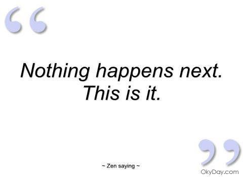

--Alan Watts
A few years ago, my dad died. Well, I guess “killed himself” is more accurate.
Not because he was depressed, or sick, or in pain- he wasn't. He had a perfectly fine and adequate life.
So then why take this very calm and methodical action?
Because at age 85, my dad felt he had nothing more to “look forward to.”
He saw that the present was all that was left. He saw, “There is no point.” He saw, “This is it.”
And he did not like it.
So he left.
That’s what our typical future-driven, improvement oriented, focus on situations can bring a person to.
A great big fat no-thanks to existence as it is.
The fact is, for most folks, the present- unchanged, unfixed, unsmoothed- is simply not enough.
Which is why so many lifetimes are devoted to more, to getting, to improving. We're aiming for the future, striving for goals, trying to attain.
We want better health, we want good things for the kids, we want love, a better job, more sleep. We want a different story of ourselves, to be enlightened, to get unstressful thoughts, or more space between thoughts, or no thoughts at all. We want happier feelings and to be a better person (whatever any of that actually means.)
And then we spend these lives try, try, trying to make all that happen.
Until old age finally brings home the pointlessness of shooing away existence as it is.
With old age we discover that we can no longer pretend there’s more more coming. We’re forced to come reluctantly face-to-face with this is it.
And yes, some find that sad or depressing. Certainly many reject this What Is business right up to the bitter end.
In fact my dad’s seemingly dramatic choice was really just a version of, "Screw this "presence" stuff. Give me something better to at least aim for or I'm taking my ball and leaving."
So today, just because that's what we do here, The Mind-Tickler asks…
Is it possible to enjoy this lifetime without the constant aim towards something, to get something?
Is it possible to enjoy this experience even if we’re "not going anywhere?”
If we're willing to consider this, we might discover that old age actually can bring peace and acceptance, exactly because it comes with finally surrendering those lifelong demands over existence.
Turns out, “This is it,” is peaceful. Turns out, “There is no point,” is an “Ahhh.” Turns out, not trying to fight existence, is a relief.
No longer hurling ourselves at the unmovable brick wall actually feels better.
So if "better" is what is wanted, we might make a note of where it hangs out.
And here’s the often-unseen thing:
Whether any of this is known or not, understood or not, seen or not…
This is still it.
Whether we ever do come to know that, or whether we continue to think improvement is important, or whether we never stop thinking we need enlightenment, safety or love…
It’s still the case that this, this present, is it.
It's all there is. It's all we get.
Liked or not, maybe it's enough.
Maybe even more than enough.
Maybe it's even everything.
I mean....
Can’t get more more than that.
"Put it this way,
if you look at it the success rate of enlightenment is ridiculously low.
I mean look at all the teachers who teach mindfulness who are not enlightened, and then the ones that are apparently enlightened, most of them were about to kill themselves or fell over drunk and woke up in oneness.
This can’t be taught and it can't be meditated to. Meditation in its own right is a lovely thing.
But it's not taking you anywhere because this is it.
And to be fair Buddha did have a bit of a tendency for the sweet sticky rice deserts.
Probably after all those years starving himself under the Bodhi tree eating bird shit off leaves.
He was not free of his desires.
Enlightenment is a business for people who believe they are someone who can be on a path to becoming better than they are now. And that is painful and it hurts believing that this current moment can be escaped.
But this is it kid. This moment is all there is."
-- Jacqueline Wood
every week
Watch Judy and Shiv Sengupta discuss spiritual anarchy
Click here to watch Judy on Buddha at the Gas Pump
click towatch Judy and Walter have fun chatting about about nonduality, the self, consciousness, awareness, free willand other light and breezy stuff
watch Judy and Robert Saltzman talk nonduality
first —— https://www.youtube.com/watch?v=BAa3UCEyROQ
second --https://www.youtube.com/watch?v=7fv_vsvaejshttps://www.youtube.com/watch?v=3DAn8Rqg3I0
